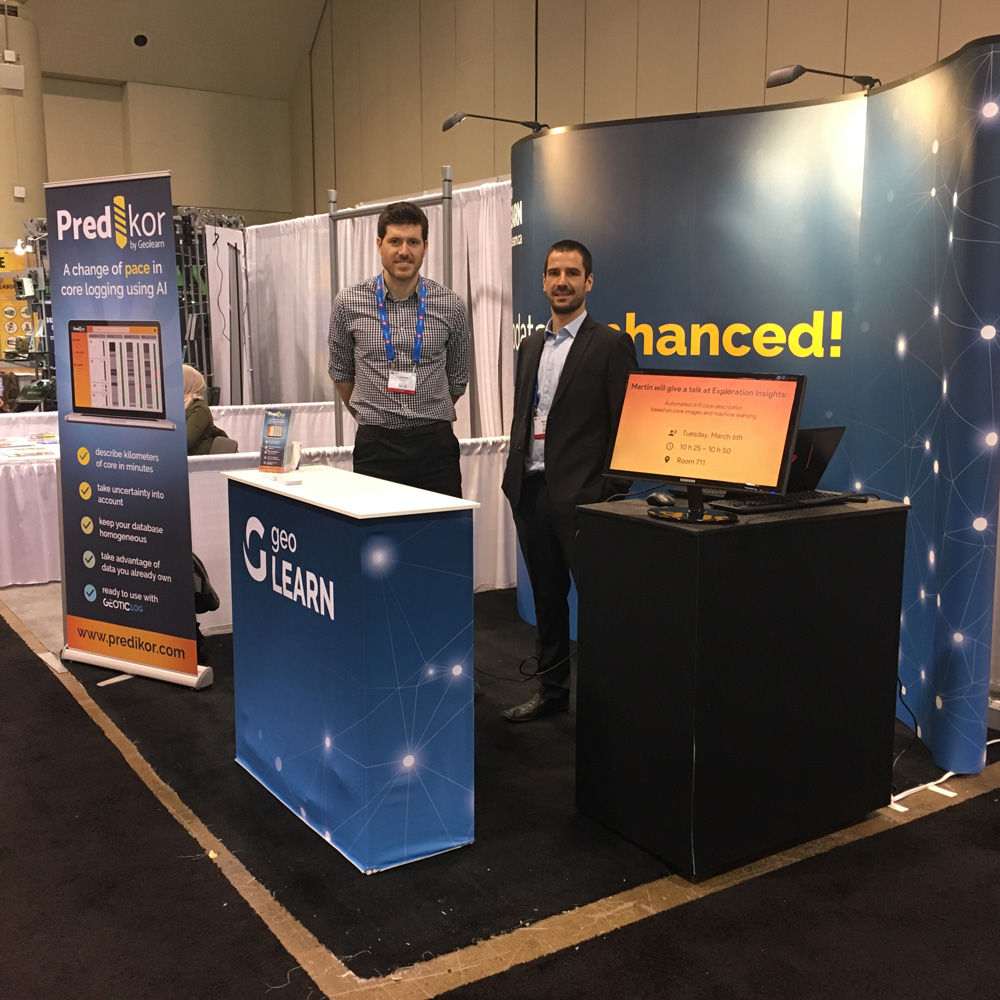

Geolearn uses state-of-the-art technologies such as deep and shallow learning as well as geostatistics, to retrieve more information, recognize hidden patterns and increase the power of your data so that you can solve the problems of your geoscience projects.
We offer connected, interactive and portables solutions to visualize effectively, explicitly and aestheticly your content from predictions or raw data.
We produce tailor-made software solutions on for storage, processing and interpretation of data including, if necessary, databases relational data and interfaces of interactive visualizations.
You have training needs in machine learning, in geostatistics or in python programming applied to geosciences? We can answer it, whether through in-house or online training courses.
Automatic facies classification, clustering 2D/3D, automatic interpretation of faults/fractures and Bayesian stochastic inversion.
Log prediction, clustering and automated classification of rock facies.
Mapping high resolution airborne geophysics images from low resolution data using AI, deep learning feature extraction and more
Predikor (automated description of core pictures, Unbox (Depth referencing of core images from core box photographs)
Founded in 2017 by students from INRS-ETE, Geolearn
has developed unique data processing and image analysis routines
in the field of geoscience. Considered a leader in innovation,
Geolearn launched Predikor in 2018 and hosted several ML workshops throughout Canada.
In 2022, Geolearn joined the company
Geostack to continue the development of new technologies and intelligence
artificial applied to geophysics.
